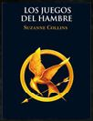
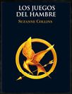

Triología de los Juegos del Hambre
| Autor | Susanze Collins |
|---|---|
| Género | Novela |
| Subgénero | Ciencia Ficcion |
| Título Original | The Hunger Games |
| Enlaces Externos | |
  | |
16-12-2024
LOS JUEGOS DEL HAMBRE
Susanze Collins
| Autor | Susanze Collins |
|---|---|
| Género | Novela |
| Subgénero | Ciencia Ficcion |
| Título Original | The Hunger Games |
| Enlaces Externos | |
|  | |